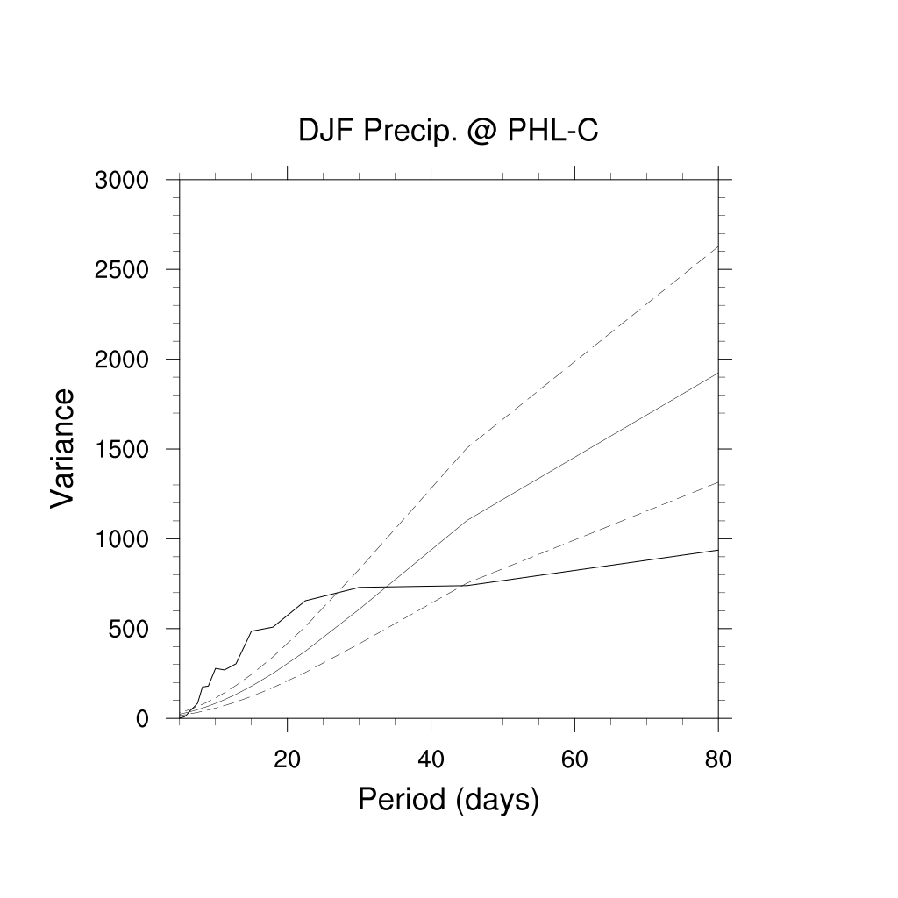

利用NCL做FFT-頻譜分析#
Example 1: 菲律賓中部 (9˚-14˚N, 122˚-127˚E) 在DJF季節區域平均降雨的頻譜分析。
;*************************************************
; spec_3.ncl
;
; Concepts illustrated:
; - Calculating confidence intervals
;************************************************
;
; These files are loaded by default in NCL V6.2.0 and newer
; load "$NCARG_ROOT/lib/ncarg/nclscripts/csm/gsn_code.ncl"
; load "$NCARG_ROOT/lib/ncarg/nclscripts/csm/gsn_csm.ncl"
; load "$NCARG_ROOT/lib/ncarg/nclscripts/csm/contributed.ncl"
;
; This file still has to be loaded manually
load "$NCARG_ROOT/lib/ncarg/nclscripts/csm/shea_util.ncl"
;************************************************
begin
;************************************************
; variable and file handling
;************************************************
fn = "./data/cmorph_sample.nc" ; define filename
in = addfile(fn,"r") ; open netcdf file
pcp = in->cmorph(:,{9:14},{122:127})
pcpm = dim_avg_n_Wrap(dim_avg_n_Wrap(pcp, 2), 1)
Cell In[1], line 1
*************************************************("")
^
SyntaxError: invalid syntax
NCL的時間格式必須是yyyymmdd，我們要先做一些轉換。
rtime = pcpm&time
delete(pcpm&time)
pcpm!0 = "time"
pcpm&time = cd_calendar(rtime,2)
接下來一年一年進行頻譜分析，然後再對年做平均。
;************************************************
; set function arguments
;************************************************
d = 0 ; detrending opt: 0=>remove mean 1=>remove mean + detrend
sm = 1 ; smooth: should be at least 3 and odd
pct = 0.10 ; percent taper: (0.0 <= pct <= 1.0) 0.10 common.
ys = 1998 ; Start year
ye = 2020 ; End year
ntim = 90 ; # of days in DJF
;************************************************
; calculate mean spectrum spectrum and lag1 auto cor
;************************************************
; loop over each segment of length ntim
spcavg = new ( ntim/2, typeof(pcpm))
spcavg = 0.0
r1zsum = 0.0
do yy = ys, ye
time1 = yy *10000 + 1201
time2 = (yy+1)*10000 + 228
pcp_5d_ave = runave_n_Wrap(pcpm({time1:time2}), 5, 1, 0)
dof = specx_anal(pcp_5d_ave,d,sm,pct) ; current segment spc
spcavg = spcavg + dof@spcx ; sum spc of each segment
r1 = dof@xlag1 ; extract segment lag-1
r1zsum = r1zsum + 0.5*(log((1+r1)/(1-r1))) ; sum the Fischer Z
end do
r1z = r1zsum/(ye-ys+1) ; average r1z
r1 = (exp(2*r1z)-1)/(exp(2*r1z)+1) ; transform back
; this is the mean r1
spcavg = spcavg/(ye-ys+1) ; average spectrum
;************************************************
; Assign mean spectrum to data object
;************************************************
df = 2.0*(ye-ys+1) ; deg of freedom
; all segments
df@spcx = spcavg ; assign the mean spc
df@frq = dof@frq
df@xlag1= r1 ; assign mean lag-1
接下來繪圖。
;************************************************
; plotting parameters
;************************************************
wks = gsn_open_wks("png","./images/spec") ; send graphics to PNG file
r = True ; plot mods desired
r@gsnDraw = False ; do not draw
r@gsnFrame = False ; do not advance frame
r@tiMainString = "DJF Precip. @ PHL-C" ; title
r@tiXAxisString = "Period (days)" ; xaxis
r@tiYAxisString = "Variance" ; yaxis
r@trXMaxF = 80.
r@trXMinF = 5.
;************************************************
; plot
;************************************************
r@xyLineThicknesses = (/2.,1.,1.,1./) ; Define line thicknesses
r@xyDashPatterns = (/0,0,1,1/) ; Dash patterns
;***********************************************
; Plot: Generate fancier plot showing
; "red noise" confidence bounds
; (a) solid for spectrum and Markov,
; (b) dash for bounds
;***********************************************
p = 1/df@frq ; *highly non-linear*
p!0 = "f"
p&f = df@frq
p@long_name = "period"
p@units = "day"
ip = ind(p.le.90 .and. p.ge.5) ; all indices for "short" periods
splt = specx_ci(df, 0.05, 0.95) ; calc confidence interval
plot = gsn_csm_xy(wks,p(ip), splt(:,ip),r)
draw(plot)
frame(wks)

end